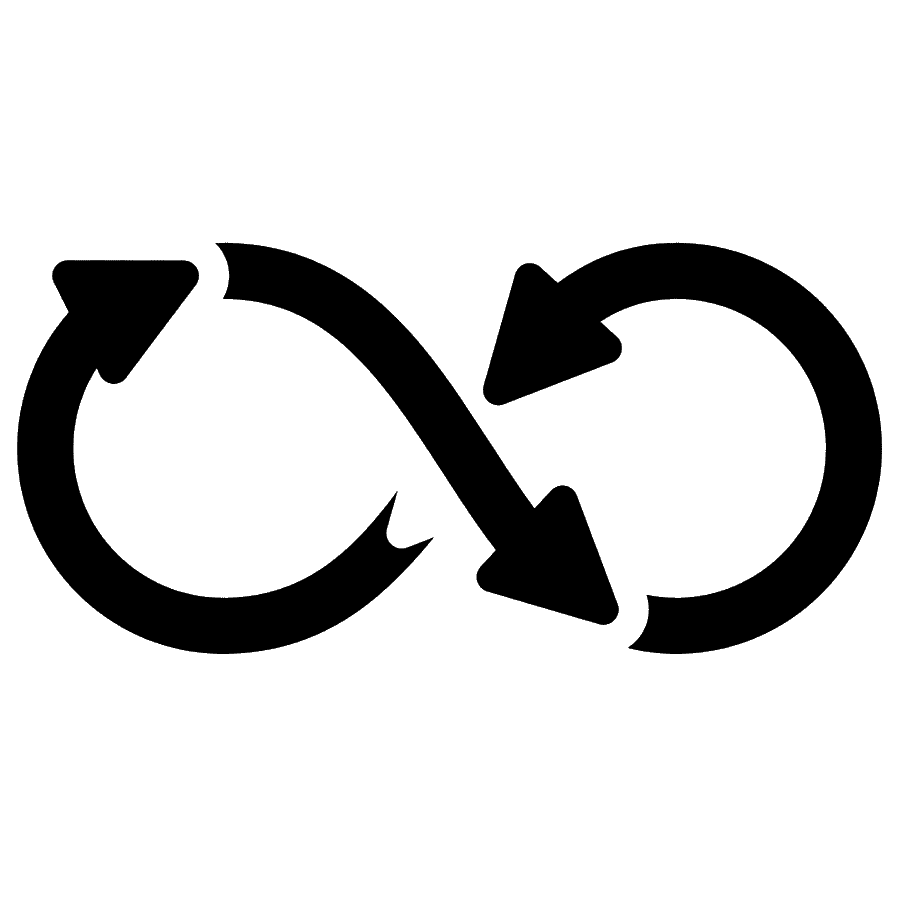
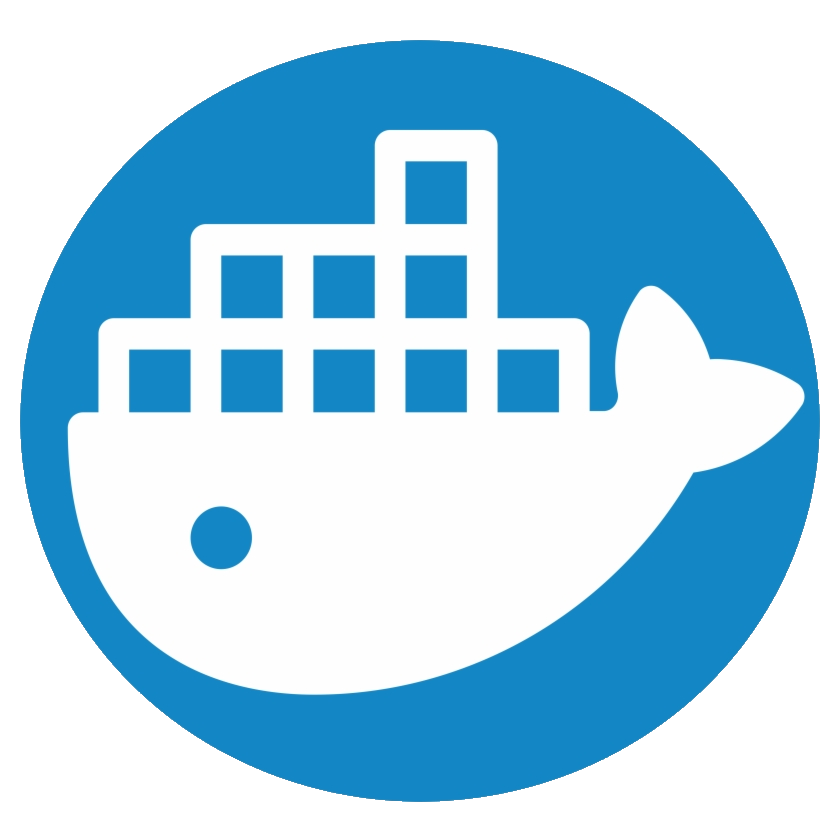

Цены на услуги
- 
DevOps консалтинг
2500 Сборка и деплой пакетов с помощью Ansible
2500
Внедрение Agile процессов и найм персонала
2500Траблшутинг различных задач и процессов, помощь разработчикам
2500Внедрения сервиса применения конфигурации Ansible, Chef, Puppet
2500
Настройка систем контроля версий на сервере SVN, GIT, Bitbucket, Mercurial и др.
2500- 
Установка, настройка контейнеров Docker
2500 Настройка различных систем мониторинга, Nagios, Zabbix, Munin, Zenoss и др.
2500
Настройка отказоустойчивых кластеров с распределением нагрузки
2500
Внедрения таск менеджмент систем и их интеграция Jira, Service Desk, Confluence
2500